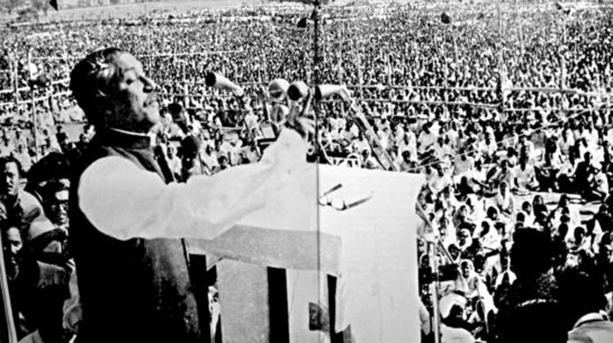

Bangabandhu Sheikh Mujibur Rahman
Father of the Nation of Bangladesh

Bangabandhu Sheikh Mujibur Rahman during historic 7th March Speech, Photo: the daily star
- March 17, 1920 - Born in Tungipara village in Gopalgunj subdivision of Faridpur district.
- 1927 - He was enrolled at the ‘Gimadanga Primary School’ and after two years he joined the ‘Gopalganj Public School’ in class three. In 1931 he was enrolled in class four at the ‘Madaripur Islamia High School’.
- 1934 - He had to drop out from school due to eye surgery and his slow recovery posed hindrance in resuming school which he could do after four years.
- 1938 - He married Begum Fazilatunnesa. The couple had three sons - Sheikh Kamal, Sheikh Jamal and Sheikh Russel and two daughters - Sheikh Hasina and Sheikh Rehana.
- 1940 - He joined the ‘All India Muslim Students Federation’ and was elected councillor for a term of one year.
- 1943 - he became a member of the ‘Bengal Muslim League’ and toiled actively to accomplish the League’s mission of a distinct Muslim state of Pakistan.
- 1947 - He completed his degree and emerged among the Muslim politicians who worked under the leadership of Huseyn Shaheed Suhrawardy at the break of the 1946 communal violence that erupted in Calcutta. He strived to repress violence while safeguarding the Muslims. Following the Partition of India, he joined the ‘University of Dhaka’ in the then East Pakistan as a law student and on January 4, 1948 he founded the ‘East Pakistan Muslim Students' League’.
- 1949 - He faced expulsion from the university and was arrested for organising an agitation with the clerical and other menial staffs of ‘Dhaka University’ on the issue of rights of the workers. On June 23 he joined the Bengali nationalists Suhrawardy, Maulana Bhashani and others to form the ‘East Pakistan Awami Muslim League’. He was made the joint secretary while in confinement and was released at the end of June.
- 1953 - He became the general secretary of the party on July 9 and next year he was elected a member of ‘East Bengal Legislative Assembly’ on the ticket of the coalition ‘United Front’.
- 1955 to 1958 - He remained an elected member of the second ‘Constituent Assembly of Pakistan’. In 1956 the ‘One Unit’ plan was implemented where western provinces were merged as ‘West Pakistan’ and ‘East Bengal’ became a part of ‘One Unit’ rechristened as ‘East Pakistan’. In 1956 he became the minister of commerce, industries, labour, village aid and anti-corruption but resigned in 1957.
- 1958 - General Ayub Khan enforced martial law on October 7 suspending the constitution. On October 11 and s Mujib was arrested. During this time he initiated ‘Swadhin Bangla Biplobi Porishad’ an underground organisation to counter the atrocities of Ayub Khan and his martial regime and to achieve an independent Bangladesh.
- 1963 - After the death of Suhrawardy, he became the head of ‘Awami Muslim League’ which was re-christened as ‘Awami League.
- On February 5, 1966 - He put forward a six point plan titled, ‘Our Charter of Survival’ before a selected committee during a national conference of opposition parties held at Lahore. It was an obvious charter of independence of Bengal as a nation. He became the President of ‘Awami League’ on March 1 and toured across the nation to promote and gain support for the six point plan while facing several arrests.
- 1968 - The infamous ‘Agartala Conspiracy Case’ was inflicted against Mujib and several others. While they were confined at the ‘Dhaka Cantonment’, a mass insurrection followed including agitation, protests, curfews, police firings and casualties. The central government finally gave in and on February 22, 1969, Mujib and others were released. He received public acclamation as ‘Bangabandhu’ on February 23 in a mass reception. On December 5, he declared that East Pakistan will be known as Bangladesh from that time.
- 1970 - Although ‘Awami League’ won the democratic election of Pakistan with an absolute majority under his leadership, the party was not invited to form government.
- 1971 - Mass protests against such discrimination followed and a civil disobedience movement was initiated by Mujib who called for independence of Bangladesh. ‘Operation Searchlight’ was conducted by Pakistan Army and Mujib was arrested and moved to West Pakistan. The ‘Bangladesh Liberation War’ followed and Pakistan had to surrender to Bangladesh-India Allied Forces.
-
1972 - Mujib was released on January 8 following
which he met Edward Heath, the then British Prime Minister in
London, addressed international media, went to India to meet
Indian President Varahagiri Venkata Giri and Prime Minister Indira
Gandhi and other cabinet members and then came back to Dhaka where
he received a heart warming welcome.
He first became the President of the provisional government of Bangladesh and later took charge as the Prime Minister. The after-effect of rampage posed by the army of Pakistan witnessed the young Bangladesh in the middle of carnage in every way. The Bangladeshi army was gradually formed. Rigorous rehabilitation and other measures to bring the nation into normalcy were undertaken. - 1974 - Gradually the nation recovered with Mujib playing a prominent role but the disastrous famine of Bangladesh including other national issues infused dissent against his government. He was accused of nepotism while political and social unrest continued resulting in an upsurge in violence. He was blamed for killing forty thousand people by his ‘Rakkhi Bahini’. Finally an emergency was declared.
- August 15, 1975 - Mujib and most of his family members were assassinated in a military coup initiated by treacherous army men and discontented members of ‘Awami League’. Daughters of Mujib however escaped the murder plot as they were in Germany.
Here's a time line of Bangabandhu's life:
"Sheikh Mujibur Rahman, shortened as Sheikh Mujib or just Mujib, was a Bangladeshi politician and statesman. He is the founding father of the People's Republic of Bangladesh."
If you have time, you should read more about this incredible human being on wikipedia or The famous people